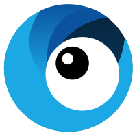

GOASIS
We are a group of independent developers who have an extreme love for Go
View on GitHub
A Modern API Gateway
A breathing HTTP server and reverse proxy in Go
Stargate is a notification middleware developed in Go. Initial support will be connectivity to AWS SNS(SMS) and Twilio.